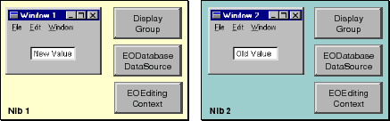
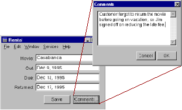
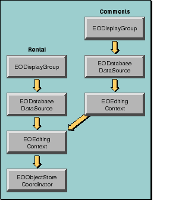
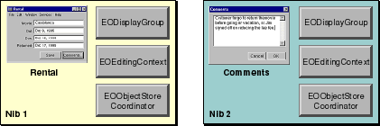

Table of Contents
Table of Contents  Next Section
Table of Contents
Next Section
Table of Contents  Previous Section
Previous Section
This arrangement is useful when an application allows the user to edit multiple independent documents. For example, imagine an Application Kit application that creates and modifies video rental records. Each rental is represented by a window that is loaded from the same nib.
In this scenario, multiple nibs have the same object graph and therefore see each other's changes to objects immediately.
This configuration is useful in a "drill down" user interface where, for example, changes in a nested dialog box can be okayed or canceled.

Figure 40. Different Nibs Use Different EOEditingContexts
EODisplayGroup displayGroup;In Objective-C:
// Assume that displayGroup is the display group
// from Nib 1 and that Nib 1 has already been loaded.
EOEditingContext editingContext;
editingContext = displayGroup.dataSource().editingContext();
EOEditingContext.setSubstitutionEditingContext(editingCo ntext);
NSApplication.loadNibNamed("Nib2", this);
// Restore the default behavior
EOEditingContext.setSubstitutionEditingContext(null);
EODisplayGroup *displayGroup;After loading a nib with a substitution editing context, you should restore the default behavior by setting the substitution editing context to null (nil in Objective-C). Then when nibs are loaded in the future, their editing contexts are simply unarchived and aren't replaced.
// Assume that displayGroup is the display group
// from Nib 1 and that Nib 1 has already been loaded.
EOEditingContext *editingContext;
editingContext = [[displayGroup dataSource] editingContext];
[EOEditingContext setSubstitutionEditingContext:editingContext];
[NSApplication loadNibNamed:@"Nib2" owner:self];
// Restore the default behavior
[EOEditingContext setSubstitutionEditingContext:nil];

Figure 41. A Drill-Down User Interface

Figure 42. Nested Editing Context Configuration

Figure 43. Nibs for the Rental and Comments Windows
EODisplayGroup rentalsDisplayGroup;In Objective-C:
// Assume that rentalsDisplayGroup is the display group
// from Nib 1 and that Nib 1 has already been loaded.
EOEditingContext editingContext;
editingContext = displayGroup.dataSource().editingContext();
EOEditingContext.setDefaultParentObjectStore(editingCont ext);
NSApplication.loadNibNamed("Nib2", this);
// Restore the default behavior
EOEditingContext.setDefaultParentObjectStore(null);
EODisplayGroup *rentalsDisplayGroup;After loading a nib with an editing context substituted as the default parent object store, you should restore the default behavior by setting the default parent EOObjectStore to null (nil in Objective-C). Then when nibs are loaded in the future, their editing contexts are simply connected to the default EOObjectStoreCoordinator.
// Assume that rentalsDisplayGroup is the display group
// from Nib 1 and that Nib 1 has already been loaded.
EOEditingContext *editingContext;
editingContext = [[displayGroup dataSource] editingContext];
[EOEditingContext setDefaultParentObjectStore:editingContext];
[NSApplication loadNibNamed:@"Nib2" owner:self];
// Restore the default behavior
[EOEditingContext setDefaultParentObjectStore:nil];
Table of Contents Next Section